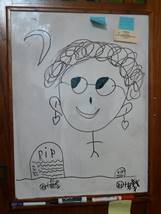

Friday, January 01, 2016 HAPPY NEW YEAR
We slept in until almost 9AM. After a nice breakfast, I returned a call to Bishop Mullins. He just wanted to be sure that we were aware that Lynn Ray passed away on the morning of December 31, 2015. We had received a phone call as we were traveling home, that Lynn was in the hospital and they put him on a ventilator trying to keep him here until his son could fly in from Italy. Bishop Mullins said that it didn’t work and his son wouldn’t get here until the evening of January 3, 2016. After breakfast we called Bryce and Deanna and made plans to pick them up at 3:30pm this afternoon. We packed, planning on staying over at Irven and Sandy’s tonight. As we were gone on December 31st, we couldn’t have a New Years Eve party so had decided that we would have a New Years Day party. However, just as we were leaving the Ray’s home, Irven called and said that Sandy wasn’t feeling well so they canceled the party. We went home and unpacked the car; we then lay down and took a nap. After dinner we watched the movie “An Affair to Remember”. Although we have seen it many times, we still really enjoy that movie. Just as it was finishing, Bishop Mullins came and I went with him to visit Marianne and give her a Priesthood Blessing. When I got home, we couldn’t find anything else that we thought was worth watching so we went to bed and cuddled.
Saturday, January 02, 2016
I went up to David’s where he and I started building a “climbing wall” in his garage. Shauna and the children went to a cousin’s Baptismal ordnance. We worked until almost 5pm when I left to come home. I quickly changed clothes, and then Mae and I went to Gale’s mother’s home where we were invited to eat dinner. After dinner several of us played a game of “Mormon Bridge”. By the time Mae and I got home, I was really tired and really hurting all over. I went to bed while Mae stayed up and took her shower. Before showering, Mae tried to comfort me and warm me up, as I was very cold. She is sure a sweetheart and special wife.
Sunday, January 03, 2016
When I got up this morning I read Hebrews chapters 2 and 3. With the Book by David J. Ridges, “The New Testament Made Easier”, I am gaining a love for the New Testament that I have never had before. While I took my shower this morning, Mae edited my December journal. I then got it printed off and added to my written journal for 2015. Mae does so much for me. I don’t think I can ever repay her for her love! Scott and his family came over at 12:10pm and brought Mae’s Birthday gift. We only visited with them for a few minute,s as we had to pick up Brother and Sister Sheers for Church. Marianne Ray called to see if we could pick her up for Sacrament meeting, but when I told her that we had to pick up the Sheers, she said that she would come up by herself. We saved a place for her but when she didn’t come, Mae went down to get her. She was just late. After sacrament meeting, Marianne had Mae take her back home. After meetings, I took a district and with Dave Johnson, we took the Sacrament to shut ins. This year our Ward has the late schedule and so it was dark by the time we visited the last family. Mae had dinner ready when I got home. After dinner we had planned on taking a plate of food to Marianne, but she went shopping and we have never heard back from her. We went down to the Hilton’s to get a good phone number and then went by Marianne’s to see if she was home, but she wasn’t there. I entered this entry and it is now almost 9pm so I think we will go to bed. I am also trying to figure out what we need for David’s climbing wall. Marianne called about 9:30 apologizing and saying she had gone visiting friends as she didn’t feel like going home since Lynn wasn’t there.
Monday, January 04, 2016
I woke up about 6am having figured out, in my sleep, how David and I will frame the climbing wall. Mae made a nice breakfast and then I went to the Nut and Bolt store and to Home Depot for supplies. David and I worked the rest of the day on the wall. It was 6pm when I got home, very tired. Mae prepared something for me to eat and I showered and went to bed. David paid for the materials and then gave me $140.00 for me helping him.
Tuesday, January 05, 2016
I slept until almost 8:00 this morning. After breakfast, I exchanged some materials and then went back up to David’s. I built a 45 degree rectangle section of the wall and that took me most of the day. I stopped on the way home at Harvest Moon Health store for some things Mae needed, and then came on home. I showered and then Mae had dinner ready, so we ate. We then went to the Church House where we got our Temple Recommends renewed. From there we went to the Stake House to get them signed by the Stake Presidency. We then went to Farr’s Ice Cream where we bought us each a Frozen Yogurt. They are much more expensive than the ones we used to buy at the Maverick stations, but now the Maverick stations have discontinued carrying the Frozen Yogurts. When we got home, we watched the movie “Young Abraham Lincoln”. We sure enjoyed it.
Wednesday, January 06, 2016
We slept in this morning until almost 8am. After breakfast Mae and I had doctor appointments as new patience of Dr. Flinders at the Roy Tanner Clinic. We needed a new Doctor with the death of Dr. Lee. That went well and we feel good with Dr. Flinders. We picked up a couple of prescription for me, then stopped at the bank and made some deposits, before coming home. We stopped at Lee’s Gun shop and got the .22 that he refinished for Jeff. It sure looks nice. I texted Jeff about the inscription I will have put on the gun. He is excited about getting it. The day went quickly but busily. David called me this evening with some questions about the wall. I will go up Saturday, and with his boys help, we will try to get the wall finished. David has to fly out of town on Friday morning and won’t get back until Saturday evening. Mae and I watched a show on Netflix titled “Second Chance” that was a good show. I sure enjoy being with Mae! Mae gave me a hair cut before we went to bed.
Thursday, January 07, 2016
We both slept fairly well last night and got up about 8am. I had gotten up and read for a few minutes before lying back down with Mae. I prepared breakfast, while Mae showered and got ready. We picked up Sister Janice Richie to go to the Temple with us. We had Brother Richard Flint ride with us, when we got to the Church parking lot. Bishop and Sister Mullins went to the Temple too, and then when we got there Brother and Sister Decker were also at the Temple. Following the session, we all went to the cafeteria and ate lunch. After getting home, Mae went visiting a couple of the neighbors. I took a nap. At 3:30pm Mae and I went down to Lee and Glory Gifford to visit with them. They are going to South Africa for possibility three years to help their daughter and son-in-law adopt three children. They wondered if we would be interested in taking care of their yard, while they are gone. We would get whatever fruits, berries and vegetables that we raised and he would pay me for taking care of the yard. It is an interesting proposition and I have mixed feelings at this time. Mae attended Choir practice this evening as the Choir is going to sing at Lynn Ray’s funeral tomorrow. While there most of the choir also went to the viewing. I worked on my journals, editing my 1973 journal. Mae got home about 8pm. After Mae got home, she started taking down Christmas decorations, so I pitched in and we got all the inside decorations packed in their containers. We were tired when we went to bed.
Friday, January 8, 2016
I was up about 3am worrying about Sandi, as she goes to court today to settle with Nick as to the divorce settlement. This has been a great strain on Sandi, as Nick is trying for ½ of everything, including the house. Also in general, I am concerned with 2/3’s of our children and their relationship with the Lord. We got going quite early this morning as we have Lyn Ray’s funeral today. We picked up Brother and Sister Sheers and gave them a ride to the funeral. Sister Sheers is a cousin to Marianne, however, they are much older, he is 94 and she is 90 years old. They both have to use walkers, but they still keep going. Lynn’s funeral service went very well. Mae sang in the choir and I was asked to give the benediction. We did not go to the dedication of the grave, as Brother and Sister Sheers were exhausted, just with the viewing and funeral. Mae went out to eat lunch with Georgia, who took her out for her Birthday. I finished taking the outside lights down and getting them boxed up. Mae got home before I was finished, so she helped me put all the decorations away. While Mae was busy cleaning up the house, as we have invited Lyndsay and Darrel Wayment and Judy and Klaus Decker over this evening to play some games and visit, I installed a CO alarm in our house. I then took over the vacuuming and did that for Mae. We got good news from Sandi this afternoon. The Judge awarded Nike half the furniture, and the safe with what funds are left in it after Nike illegally removed about ½ of the total amount against previous court orders. That was the total settlement that Nike gets. That was quite a thrill to see, that because of his greediness, he really lost out. Sandi had originally offered him $20.00 plus half of the furniture and belongings. Sandi gets to keep her home. The Judge told Nick that he wasn’t fair for him to get half the house when he didn’t put any money into it, and she had put in $350,000.
Saturday, January 09, 2016
We had slept in this morning, then after getting up and having an egg omelet breakfast, we went to the Temple and did Baptisms for the dead. A sister, in our ward, had found these names of her ancestors and asked if we could have them done. I did one name plus 5 from the Temple file. I then had the privilege of doing the baptizing of Mae for three names. We were both confirmed for the names we brought plus some additional names from the Temple files. After returning home, Mae worked on her Ward Historian calling and I watched a couple of movies. We went down to Sister Ray’s and helped her move some furniture. Because of some of my weaknesses, I went to bed feeling depressed.
Sunday, January 10, 2016
I woke early with my depression, and then added to it with my concerns for our children. I had a bad head ach so I took some Acetaminophen (Tylenol) and laid in the recliner. I was cold and so put a blanket on, but when that wouldn’t warm me up, Mae brought the electric blanket and put that over me. I did get feeling well enough to attend our block church meetings, however, I forgot to take my glasses with me. Our Sacrament meeting as well as Priesthood meeting and Sunday school were very special so I was glad that I did attend. After getting home, I had just changed clothing when Bishop Mullin’s called and asked if I could find someone to help me administer to him and Sister Mullins. I called Lee Gifford, who replied that he would need to re-change into his suit and he would go with me. Both Bishop Mullins and Sister Mullins were very sick. It was a privilege to give them a Priesthood Blessing. Mae had a nice dinner ready when I got back home. After dinner I went back into the front room where I laid back down in the recliner and put a blanket over me. I went right to sleep and slept for sometime before Mae came in and woke me. We read 3 chapters in the book “The Infinite Atonement” by Tad R. Callister. That is a great book! As I write this entry I am sneezing quite a bit. Hopefully with more sleep, I will be feeling ok to go up to David’s in the morning to help him.
Monday, January 11, 2016
I was up early, and though I told Mae that I could get myself off, she insisted on getting my breakfast. I left before 7am to pick up some materials before going to David’s. David and I worked until noon, when I left to join Mae at Kim and Jeanenne’s for a family sibling gathering. We enjoyed a wonderful lunch, followed by watching a show of Sergeant Alvin York, who Kim explained was the highest decorated Soldier during World War 1, starring Gary Cooper. I had seen the movie before but with Kim’s explanation of the story, it was much more enjoyable. I then went back to David’s and we finished the climbing wall. It was 8 pm when we finished. I then had some dinner with David before coming home. It was after 9 when I got home. I was feeling ok when I got home, but when I set down my energy completely left me. Mae tucked me in bed and I went right to sleep.
Tuesday, January 12, 2016
I slept until almost 7am before getting up. Mae was up by then also. Mae made a wonderful breakfast of waffles and eggs. She is sure special! After eating, I was still sleepy and was cold. I laid in the recliner, where Mae tucked the electric blanket around me and I went back to sleep for over an hour. After showering and shaving I took some items to the D.I. I also stopped at Star Engraving and ordered a plate to be installed on Dad’s .22 rifle for Jeff. From there I went to Murdock Chevrolet and had our car serviced. When I got home, Mae was watching a Western movie on TV, while she put our three week’s nutrient pills into our containers, so I set down and watched the ending of that show and I watched a 2nd show. Mae cooked chicken, rice and gravy for dinner. We were to go to Patterson’s at 6pm, home teaching and visiting teaching but they weren’t home so we went to Marianne Ray’s where I also checked out her furnace to find why it was not heating. She had changed the filter on the furnace and hadn’t got the door on right so that the switch wouldn’t reset. We visited with her for a few minutes and Mae gave her a lesson. We then visited Sister Leah Neilson. After returning home, Mae and I played some games of Rummikub in which Mae ended up the winner. I entered this entry and we went to bed. Mae isn’t feeling the best tonight.
Wednesday, January 13, 2016
We woke up at 7:45 this morning. My back was hurting so I laid on the “foam log” for a few minutes. That sure seems to help. Bishop Mullins called and asked if I would help him administer to Ravee this morning. I hurried and took my shower, changed clothes and went down. Ravee is really sick. I anointed her and Bishop Sealed the Anointing and gave her a beautiful Priesthood Blessing. Afterwards, Bishop gave me a blessing that I might not contact any infection due to entering their home. I sure have gained a love for that couple since we have moved into this Ward. After returning home and having our breakfast, I had Mae lie back down and sleep longer. She hasn’t been feeling very well the past couple of days. I did a few chores around the house and started this entry, before working on my diary entries. Mae slept for over an hour. I worked on my Diary entries, mainly editing the 1973 entries. I am expanding several of the entries to the best of my memory. This evening Mae and I went H.T & V.T. to Brother and Sister Patterson, Sister Lemon and to Brother and Sister Hilton. We still have the Siglin’s to try to catch. It is now almost 10pm so we will call it a day and go to bed. We changed our mind about going to bed and instead we watched “Music From the Heart” on Netflix. It was a good show, but as the show progressed the main person in the film started using the Name of God in vain. At first it was questionable as to what she said but towards the end of the film it became obvious. It was mid-night when we got to bed.
Tuesday, January 14, 2016
I woke just before 7 this morning. I read the 2nd chapter of our Priesthood manual and really felt the spirit of the lesson. I just wish there was some way to get my children to read these messages and ponder them. It is lightly snowing this morning and I was going to go out and clean walks, but Mae convinced me that we had too much to do, plus it wasn’t very much yet. As soon as we had breakfast over with, we went down to the Roy Tanner clinic and picked up the prescription that Dr. Flint had written for Mae, took it up and left it with Wall Green’s to have it filled. We then went to the Layton Tanner Clinic where we both had a bone density test. We next picked up Bob and went up to the PX on base where we bought some groceries. Next we went to the Sizzler to celebrate Bob’s Birthday. Irven and Sandy joined us there. We had an enjoyable lunch with Bob. After eating, we took Bob back to the center, stopped at Wall Greens and got Mae’s prescription and then came home. After putting the groceries away both Mae and I took a short nap. Mae went to choir practice and I worked on my journals. After Mae got home, she worked on her Ward History for a while and then we turned on a show on TV. We watched a dumb show with Katherine Hepburn and Spencer Tracy. It should have been good but we found it dumb. It’s now 11pm and we are going to bed.
Friday, January 15, 2016
We slept in until 8am. It was almost 9am when I finished my normal reading and got dressed. It had snowed quite hard last night so I had Mae fix me some toast with almond butter and a protein drink and then I went out removing snow for several neighbors. I came in about 11am and rested. The snow removal company came and shoved snow back into the driveways, so I went around and cleaned out several driveways. I had one man across the street from the office, I believe #301, brought me a loaf of lemon poppie seed bread for cleaning their driveway. While removing some of the snow, from the snowplow, a man from #299 had me come to his shed in the back of his house and he gave me 2 pair of gloves in appreciation for me cleaning his walk and driveway. Mae has worked most of the morning on the Ward History. She laid down this afternoon for a while as she isn’t feeling the best. I went down to the office and visited with them about some of the snow removal problems, but the only thing they could say is that I should take it up with the owner, Mr. Jay Nye. I came home and worked on a letter to him but I am still not sure just how it should go. Mae got dinner ready even though she is sick. While eating, Mae told me that she had talked to Shellie by phone. As Mae told me of her conversation, for some reason it really upset me. Then Mae got up to clean up the dinner dishes. I asked her to leave things and I would take care of it, but Mae didn’t hear me. I lost my temper as Mae continued to clean up, and I slammed my hand on the table and asked (almost ordered) her to let me do that. I shouldn’t have lost my temper. I get upset too fast, and Mae didn’t even realize what I had said. Sometimes I sure don’t understand this life! This evening Mae and I watched a movie that showed some of the trials that both White and Black races experienced during the period of the 1950’s (especially in the Southern States) when the Equal Rights were being fought for. I couldn’t help being grateful that I was born in the West and a member of the Church with Its teachings.
Saturday, January 16, 2016
Mae didn’t sleep very well last night, so I tried to be quiet when I got up so that she could sleep longer this morning. I woke at 3:30am, read another chapter in the New Testament and checked to see if we got very much snow during the night. In as much as it hadn’t snowed but a skiff, I went back to bed and woke again at 6:30. I finished reading the writings of the Apostle Paul. I am so grateful that our Stake Presidency challenged us to read the New Testament this past year. I haven’t completed it yet, but DeAnn Jones suggested that we get the book, “The New Testament Made Easier”, written by David J. Ridges. That has been one of the greatest books, I have ever read, to help me understand the New Testament. I have read many times the Four Gospels, Mathew, Mark, Luke and John and have always enjoyed them, but the rest of the New Testament I have never understood. With this book I have really enjoyed the writings of Paul with an understanding that I have never had before. Last night and this morning I read the book of Hebrews and thrilled at its messages. I just wish that I could get my family to read this book. I went over to FedX in Clinton and made some copies for Mae. While, in the area, I picked up some Get Well cards for Mae. I also bought some Chobani yogurt for us. Mae isn’t feeling well today, although she tries to keep going. I talked to Bishop Mullins twice today and he is feeling some better but Revee is in the hospital, very sick. They think she has a strain of Swine Flu, and it has coated her lungs and she can’t breathe. This evening we watched the BYU vs Standford in men’s volleyball. BYU won although it was a close game. Following the game, we watched part of the show “The Gospel of John”. We weren’t very impressed with the production. We finally turned it off and went to bed.
Sunday, January, 17, 2016
I woke at 6am and was up for a while before Mae got up. Mae still isn’t feeling well so she will stay home from Church today. I did lay back down for a while, getting a little more sleep. Mae did prepare a nice breakfast and after eating, she went back into the front room and rested in the recliner while I cleaned up the kitchen. She also got a temple announcement made up for me to have read in Sacrament meeting, Priesthood meeting and in Relief Society. She sure takes good care of me! Mae stayed home today, not feeling the best and not wanting to take a chance of carrying this stuff to anyone else. I took the camera with me and took some pictures of the Ward Clerks, the Relief Society Presidency and the Sunday School Presidency, for the Ward History Mae is keeping. Bishop Mullins is still sick and did not attend meetings today. I believe that Ravee is still in the hospital with this sickness. There are several from our ward that are home with illness. When I got home, Mae had spent most of the time talking to Shellie and Sandi on the telephone. Mae made a nice dinner this evening. I cleaned up the kitchen for her and then both Mae and I took a short nap. This evening I worked on transferring my 1970 thru 1974 Diary into my computer journal entries. This has been quite a project, but if I do not get it done before I die that information will just about be worthless because there would be almost no one that could read my hand writing and the information is so sketchy that most would not know what I was writing about. Mae has been working on ward historical records and our home records. It’s getting late so we had better get to bed.
Monday, January 18, 2016
I woke at 4:20 this morning and got up by the call of nature. I read for a while from the D&C, but fearing that if I got back in bed, I would wake Mae, I went into the front room and slept for a little while in the recliner. I got up about 7:30 as I wanted to go up to David’s and get my trailer and tools. Mae got up and prepared breakfast although she still isn’t feeling well. After eating, David called to let me know that it is snowing at his place. With the grade of his driveway, it is not safe to try to get my trailer down from his home. We will have to wait for another day. I called Roy this morning, just to check on him. He says he just keeps going because there isn’t much else you can do. He said that he is sure grateful for Barbara and Russ and all their help. David called back this afternoon and said that the driveway was clear, so I went up. It started snowing here as I left, but by the time I got to the canyon, it wasn’t snowing there. With Tyler, Emily, Connor and David’s help, we got the tools loaded and the garage cleaned up. I am glad to have my tools back home. I watched a show on Netflix, when I got home, as Mae was busy on the computer. Before going to bed, Mae and I played a game of Rook. I started out getting way ahead, but then Mae had a good hand and ended up winning.
Tuesday, January 19, 2016
I slept well last night, but Mae hardly slept at all. I tried to let her sleep this morning, but that didn’t work either. Bishop Mullins called to ask if I could come down for a minute. I went right down. He had an inspector come down to their place to see if there was any gas that might be escaping that might be causing their illness. It checked out ok, but the inspector had to shut the gas off to the water heater as it does not meet the mobile home requirements. When Bishop asked what he needed to do, the man told him that he had to install a new water heater, however, when he went to leave he said: “I would just turn it back on”. Bishop Mullins had some questions as to how to restart the heater, so he asked if I would check it out. It relit just fine. I was glad to have gone down, that I might check on he and Ravee’s health. Ravee is still in the hospital in quite serious condition. He still isn’t feeling well. This afternoon I did some errands and then went over to visit Bob. He is doing ok but is glad to have company. He was watching “Pearl Harbor” but was going to start it over for me. However, I didn’t have 3 hours to watch it so he put on “The Bad Man and the Angel” starring John Wayne. That was a good show. After the show ended, we visited for a few minutes, although, most of the conversation has to be on the white board. I picked up a bottle of probiotics from Jennie’s office before coming home. Mae had been on the computer most of the day and also this evening working on the ward history for 2015.
I woke at 6am and Mae was still sleeping. I thought that she may have taken some sleeping medication that the Dr. had her get at the pharmacy, so I tried to let her sleep. Not wanting to disturb Mae, I went into the front room and cuddled up in the blankets. I turned the TV on to get some news, but I think the TV is about a joke! Mae came in about 8am having slept all night and she hadn’t taken anything to help her. That was good news. I took my shower and we ate breakfast. I called Bishop to check on him and Ravee. They are about the same, but he is afraid that he might loss her unless the Doctors can get this infection to clear up. I heard that she has double pneumonia, and that she has a condition where, under certain circumstances, her arteries become inflamed. This also happened and it is affecting her heart. I worked on my journals for a while, in as much as Mae hasn’t got on the computer this morning. With only one computer, and it doesn’t work the best, it makes it a little inconvenient. I did get quite a bit accomplished on entering my Diary, before I turned the computer over to Mae. While Mae worked on her ward history and presentation, I watched some western movies while I made up capsules of Ambrotose. We got a call from Doctor Flinders office with the bone density test. I have Pre-osteoporosis and Mae has osteoporosis (Mae’s mother had it really bad). We are yet trying to determine what we are going to do about these test results. Mae is quite sure the Doctor is going to want her to take Fosamax, but she is concerned with the side effects. Before we went to bed, we played a game of Rummy with me winning this time. We did call Jeff to wish him a Happy Birthday.
Thursday, January 21, 2016
Mae slept well again last night. I prepared egg omelets for our breakfast. I got the bathroom cabinet drawer repaired. The guide had come apart and it was in such a small area that it was hard to reach into the back to rescue the bracket, but I finally succeeded. I checked out the ceiling fan in the dining room and found it was solid. While I was working on it, I cleaned the fans. I installed our thermometer outside on the east patio, so that we can read it from the bathroom window. I got myself some lunch as Mae was gone shopping. At 1pm, I met Lee Gifford and went over some of the pruning of his trees. I am not sure just how I feel about keeping his yard up for him while he is gone for up to 3 years. We went over to the church house at 5:30pm, but no one came to go with us to the temple, so Mae and I left for there. We did meet Shelia and Tom Harper at the Temple and accompanied them through the session. It was different as Tom is completely deaf, so I had to have the temple officiator get him a monitor, which meant we had to sit on the back row. Sheila has poor health and is in a wheel chair, so they took her and Mae, to the front where they have a space for a wheelchair. The sister officiator helped Sheila during the session, but afterwards, Mae had to go into Sheila’s booth with her and pretty much undress her from her temple clothes and redress her. In as much as no one else came from our Ward to the temple and the Harper’s were tired, we just came home. I don’t know what to do or how to do it, but my assignment to encourage our ward members to attend the Temple, isn’t working very well. As we got home, we received a call from Jeff indicating that Matt is sick with a fever, so I guess we won’t be going up there tomorrow. I guess we will go to bed early tonight.
Friday, January 22, 2016
I seem to have slept fairly well, but I really don’t feel the best this morning. I am light headed and tired. After breakfast, I slept in the recliner. I guess it’s a good thing we didn’t go to Jeff & Gail’s home today. About 11am, I decided to go talk to Lee Gifford about the decision that I didn’t want to take care of his yard and all his trees and plants. I had my coat on and the keys to the car, just ready to start the car with the remote control, when Lee called me. He realized that I felt overwhelmed yesterday. He said that he would get a lawn specialist to care for the yard, and that the trees would be ok, even if I didn’t prune then while they were gone. I could use just the grow boxes that I wanted, and do with whatever fruit and berries that come on. I could also let others use some of the planter boxes if I don’t use then. We had a good talk and so I will do that. Mae has been so good to me all day, but I have been asleep, watched a couple of western shows or read. This evening we called Deanna. She told us that the cancer tests are positive, but at this point they haven’t determined the suggested treatment. Mae made me a wonderful dinner this evening of chicken steak with rice, vegetables and gravy. Mae has been on the computer most of the day researching materials as she has been asked to help with a Relief Society Women’s Conference in the Clinton Stake on the 25th of February. This evening we tried to find something on TV, but couldn’t, so we went to Netflix where we watched “Anchors Away”. It was a good show. It’s almost mid-night so good night.
Saturday, January 23, 2016
We both slept well last night. We were slow at getting going and both Mae and I did the stretch exercisers that Mae was taught. I feel that I need them too, as I am not doing a lot of work now. Mae made waffles for breakfast. Mae told me the other day that she had bought me something for my Birthday. While we were eating, Mae and I got talking about our diet, which is very restrictive for me. I was enjoying buying a Frozen Yogurt from the Maverick gas stations but now they are taking all those machines out of their stations as they can make more money by using that space for a coffee machine. Without that access, we have gone to Farr’s Ice cream but it is so expensive there. Anyway, Mae got excited and wanted to give me my Birthday present early. I relented and told her that it was up to her. She jumped up and brought me a “Dole Yonanas” healthy dessert maker that turns frozen fruits into a soft serve desert. I thought it was quite cute, at her excitement, as well as her love in wanting me to have something special. She is a very special wife and sweetheart! This morning I have been reading from The New Testament and from Dallin H Oak’s conference talk. Oh, the hope I get from the scriptures and our Current Church Leaders. I just wish that my children could or would search them and return to the truth’s of the Gospel. We had a late lunch and then Mae wanted to work on the computer, so I took a nap and then turned the TV on to BYU and watched a women’s basketball game. BYU won, but it was a close game. I then tried to find something else, when the TV controls locked up and I couldn’t get anything to work except the on/off, the volume and Netflix. Other than that, it was stuck on one channel and I couldn’t find out what channel that was. I maybe should have lessened to it because it seemed to elude that Obama is going to try to have marshal law and he will continue to rule our government. I tried to call Comcast, but the technician couldn’t help me. All of a sudden the TV began to work. I don’t know what happened or what I did. I watched two western shows as Mae was still on the computer. She quit working on the computer, so I finished this entry before we took our showers and went to bed.
Sunday, January 24, 2016
It snowed last night, but I think that I will let it stay instead of getting the snow blower out today, since it is Sunday and I don’t want to break the Sabbath. I do so many driveways for our neighbors and widows, who have poor health, that it is work. After breakfast, I worked on my journals for a while. At 12:00 noon I quit and got ready for church. Meetings went well today. After returning home, I went with Brother Daryl Green to take the Sacrament to Sister Jeneane Browning and to Harold and Evelyn Hilton. We were going to a Sister that lives in #244 but when we got there, no one was home. Mae had dinner ready when I got home. After eating and cleaning up, I took a nap. Mae got on the computer, working on her presentation for the Clinton R.S. Women’s Conference. She is making a Power Point Presentation, so I set the projector up for her, so she could see how her presentation looks. I talked to Irven on the phone for a while and I also called and talked to Sandi for a few minutes. Mae finally quit working on her Power Point presentation and her Ward History, so we read some in “The Infinite Atonement”. We then played a game of Rummy in which Mae beat me so far that it wasn’t even a fun game. Good night.
Monday, January 25, 2016
I woke up at 5am and after using the bathroom and reading in the New Testament, I went into the front room and slept in the recliner until almost 8am. Mae soon woke but she hadn’t slept very well until after 1am. We had breakfast and then I went out and did some snow removal. Shortly after 10AM, Mae went to pickup Sister Shirley Oleson and they went to meet six other friends to go out to eat in honor of Marie McEntire’s birthday. When I finished with the snow removal, I repaired my snow shovel and the snow blower. I then came into the house and worked on entering my Diary onto the computer. Mae had made me a sandwich for my lunch and after eating that, I took a short nap. I then worked on the computer again. Mae came home so I let her take the computer, but she soon came in tired and so she took a nap. I got quite a bit more done on my Diary. When Mae woke, she fixed us some dinner. After cleaning up the dishes, Mae again worked on the computer. I went in the front room and watched a couple of western shows on TV. We then read a couple of chapters in the “The Infinite Atonement”. We then got ready and went to bed. I did finish my letter to Mr. Nye concerning the snow plowing here in the park. I am not sure if I should send it in or not. I would like Bishop Mullin’s opinion.
Tuesday, January 26, 2016
I woke at 5 this morning and Mae was in the front room sleeping in the recliner. I read chapter 1 of Revelations doing quite a bit of cross referencing and rereading. With the help of David Ridges’ book, it sure brought great insight for me. After Mae got up – she hadn’t slept very good again last night, we had breakfast before cleaning up and going into Dr. Flinders to have him remove some pre-cancer spots on me and to talk about Mae’s osteoporosis and her concern about taking Fosamax. Dr. Flinder’s said that in his 8 years of practice, he has never had or heard from any other Doctor, of anyone having serious side effects from taking it. He felt that the chances of not taking it and falling, breaking a hip or back is way more of a risk than taking it. After leaving the Doctors office, we did some shopping at Winco. When we got home, Marianne called and wanted Mae to pick up some prescriptions. We did it for her. Mae spent most of this afternoon and evening working on her presentation. I took the light that we have above the picture of Christ apart, trying to find out why the one light will not come on when we turn the switch on. Each time we turn the light off, when we turned the light back on, only one light will glow. We have to twist the one light in order for it to light up again. The lights work good until you turn it off and then the next time you turn it on, you again have to tighten the lamp. Being totally disgusted with it, I completely disassembled the lamp and checked every connection but found nothing wrong, however, when I reassembled the light, it now work perfectly. Oh Well! It works. I started to watch a show on TV, when David called asking about Aunt Deanna, also about places to hold our Family camping trip this year. After talking to him, I called and talked to Deanna and they feel some better with the test results today. She does have cancer, Adeno carcinoma located in her liver. Presently it is about the size of a softball. The Doctor, they went to today, feels that if they can shrink the cancer with the use of Chemo therapy then a Liver Specialist may be able to operate and remove the cancer. The concern right now is they cannot locate the source of the cancer. They will take more tests tomorrow. Our love and prayers are sure with them. David’s second reason for his call is the Ken Browning Family Reunion. I called Trail Creek Lodge and visited with Sid about their facilities. The result of the call sounds very positive and it looks like unless David gets some negative feelings, we will probably go that direction.
Wednesday, January 27, 2016
I woke at 5am and read in the scriptures for some time. I am sure enjoying the New Testament, with the help of Brother Ridges’s book. Mae slept well last night and that is always good to find out. Bishop Mullins stopped in this morning and he feels that I should hold up on sending my letter to Mr. Nye concerning the snow removal in the park. Bishop also told us that Ravee is still in serious condition, but is showing some response to treatment. I started working on my Diary this morning. Mae has been busy most of the day, with part of the time preparing dinner for the Sister Missionaries this afternoon at 5PM. She also took the Ward High-Lights out to some of the Sisters. Of course, when she stopped at a couple of the Sister’s home, she went in and visited for a while. I did get a nap in but other than that I worked on my Diary. Shortly after 4PM, Mae made the comment that we should have invited Donna Beus and Darma Cosper, widowed neighbors of ours, to join us for dinner with the Sister Missionaries. She called and both accepted and were here before 5PM. Mae had a wonderful dinner prepared and we enjoyed the Sisters. They were a delight to have. After they left, the four of us enjoyed just visiting and getting better acquainted until almost 7:30pm when Sister Beus and Sister Cosper went home. I added to today’s journal and then watched a show on TV while Mae worked on the computer. It was after 11PM before we got to bed.
Thursday, January 28, 2016
BOTH Mae and I slept ok last night. After getting up, and the normal morning routines, I helped Mae prepare breakfast. I let Mae use the computer while I cleaned up the kitchen. While she was still on the computer, I went into the front room and read an article from the Ensign “When a Child Leaves the Church” February 2015 page 44. This is one area that I have more discouragement and depression than any other experience I have yet encountered in life’s journey so far. We are having great empathy at this time for Bryce and Deanna as well as Bishop Mullins and his wife Ravee Mullins. We are also very concerned about the choices that Brad and JaNae are making, with special concerns for their children. Life sometimes is hard, but I guess we were never told that it was to be easy. I took my tool trailer down to the storage lot. When I got there, some of my area had been plowed in. It took me sometime to break the ice packed snow bank, made by the snow plow, and clear out the snow so that I could back the trailer in. This afternoon Scott and his family stopped by to leave Kaitlyn with us while the rest of them went to Powder Mountain night skiing. Scott took Kaitlyn skiing last week so that he could spend time teaching her how to ski. Tonight he will spend one on one with Kaden. It is just too much to do both at the same time. We enjoyed having her with us, and she enjoyed especially having Grandma to herself. She stayed with me while Mae attended choir practice, and we watched a show on Netflix. When Mae got back home, we played a game of “Old Pig” and put some puzzles together. I then watched a western show on TV, while Mae played more games with her. Scott came to get Kaitlyn about 10:30pm. He looked like he was worn out. Mae set down and watched the end of the show with me. I worked a few minutes on my journals before we went to bed.
Friday, January 29, 2016
I slept pretty well last night but Mae didn’t get much sleep. I am enjoying the New Testament with the aid of Brother David Ridges. That has really helped to understand it much better. Mae and I worked together on preparing breakfast as well as cleaning up after. I worked quite a while on my journals. I especially spent a lot of time writing some of the stories that I heard Dad tell. I did some extra research by using the Family History programs of the Church. Mae helped me with some editing. I fell asleep while Mae was working on the computer, but was suddenly awaken by Sister Deann Hodges knocking on the door. She came to get some name slips that she had asked Mae and I to help get some of the work done in the Temple. After lunch, Mae laid down and rested for a while. This evening we relaxed and watched a good Western Show on TV staring Jimmy Stewart and Audi Murphy , “Follow the River”, before going to bed.
Saturday, January 30, 2016
I went out with the snow blower and removed snow from several driveways and when I returned home to clear my own drive way, it was already cleared. I believe it was Tim next door that cleaned it. I went up to the Pharmacy and picked up a prescription for Marianne Ray and one for me. When I returned, I picked up Mae and we took the prescription to Marianne. When we got there Mae took the prescriptions in and I cleaned Marianne’s walk and driveway from snow with her snow shovel. I then went in and repaired her fish tank pump. It only needed a gasket to be straightened out so that it would not leak air into the line. When we got home, I got on the computer to check out some information added to Dad’s record on “Family Search”. Someone had added that they had seen Dad in a wheelchair before his death. I know that this is wrong as I’m sure that Dad was never in a wheelchair in his life. I wrote up a rebuttal to that statement, which took over a type written page to explain why I feel I can make that statement. That took a long time. The snowplow came through the park, and afterwards I went back out and cleaned out driveways again. This evening Scott and his family came over for dinner, to visit and to play games. Mae made a wonderful dinner. After the children finished eating, they began to be quite noisy in their play. By the time I finished eating, I was feeling very uncomfortable with the noise. I went into the front room but then felt that I would be rude to stay in there especially if I started reading a book or watching a show. I went back into the dining area but again the noise made me uncomfortable. I went back, not knowing just what to do. Scott came in and asked if we could talk. We talked for sometime about my concerns with my boys leaving the activity of the Church. Before Scott’s family left we saw Kayden’s drawing on our white board.

This is Kaden’s original drawing As we looked at the picture, we Grandpa said there was still
We are not quite sure what his said that something was wrong something wrong with it.
Thoughts are as he shows the with it. Grandma needs glasses, so But, neither Grandma or Kaden
two tombstones with the Kaden, with just 3 lines, added the could think of what was wrong.
skeletons underneath. Maybe Glasses. Grandpa changed the frown to a
he thinks that Grandma & Grandpa smile, saying that you never see
will die soon. Grandma without a smile.
After Scott and his family left, I was concerned that I really hadn’t accomplished much. I was mentally exhausted and so we just took showers and went to bed.
Sunday, January 31, 2016
Although I slept ok, I woke up with a lot of anxiety about our plans of a family reunion. I am concerned with the idea of Sandi inviting her boyfriend to join us. Also, I am concerned about Mike’s acceptance on him being there. I suggested that we attend Breanna Lindford’s Missionary report in Kaysville and then travel on down to Provo to visit with Pat Bradfield, who is doing very poorly with her health. Following, we could go visit Mike and Becky to find out Mike’s feelings as to Sandi’s boyfriend coming to the reunion. Mae called Mike and asked if we could come down to visit them and Mike invited us to eat with them at 5pm. We got to the ward in Kaysville ok. As the sacrament meeting started, I immediately recognized that the speaker system did not work for me. The amplification hurt my ears and especially my right ear. I had to cover my right ear during the complete meeting. I wished that I had a set of ear plugs. I have never experienced that implication problem before. Also the room was so noisy, but I guess I am spoiled with the reverence in our “ward”. Mae had called Pat, but had to leave a message. Pat returned the call, but said that her son’s children were sick and she didn’t think we should come today. David called to return my earlier call, but right at that time, we were driving, just approaching American Fork. Snow started as we got to the summit of Point of the Mountain and the roads were slippery. We had decided to go through American Fork instead of taking the higher way, because of the snow. Not being very familiar with that route, heavy traffic and the falling snow, I needed Mae’s help, so I had to tell Mae to tell David that I would call him back. When we finally got to familiar area, I stopped and called David back. He helped me with some medical questions. Becky had prepared a wonderful meal by the time we got there. Following dinner Mike, Becky, Mae and I visited for quite a while on my concerns with our Family Reunion. If I am right in Mike’s feelings, he would prefer that Gary does not come, but if Sandi invites him, we shouldn’t say that he cannot come. However, he added; don’t expect me to welcome him with open arms. My feelings are still quite unsettled, but I am leaning toward Mike’s feelings. I feel that Sandi is, in many ways, following the same path that my Sister Margaret took and I am concerned as to the outcome. We really enjoyed the evening with Mike and Becky. It was 9:30pm when we got home. I caught up my journal for the past two days before we went to bed.